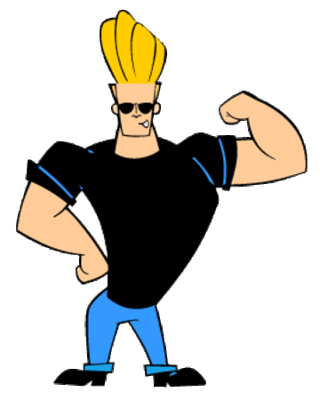

My strengths?

My strengths?
Did I mention that I do not particularly appreciate talking about myself?
No, I did not?
okay, well, I am telling you then. ha! ha!
You know what? I think i'll just pass and go directly to my limitations
In terms of limitations, It is hard for me to disconnect from work, I have the tendancy to place everyone before me and tend to forget myself in the process. I am and overthinker and it can be drainning and when I can be overprotective with my loved one at times. Huge amount of stress does affect me and impacts on my confidence.If I am not focussed I can end up multi-tasking and yeah its not good because many a time, I end up completing nothing and build up my frustration levels.
If I have to share my strengths, I would say I am very patient, I am empathetic and easily can put myself in one's shoes. I adapt fast and I am flexible.And I love solving problems and helping as much as I can.
We all know, no one is perfect, we are just perfectly imperfect creatures and it is ok. But what I always aim at, personally, is to have a balance between the two.
Not an easy task, ey buddy?

Well, we can only keep trying.